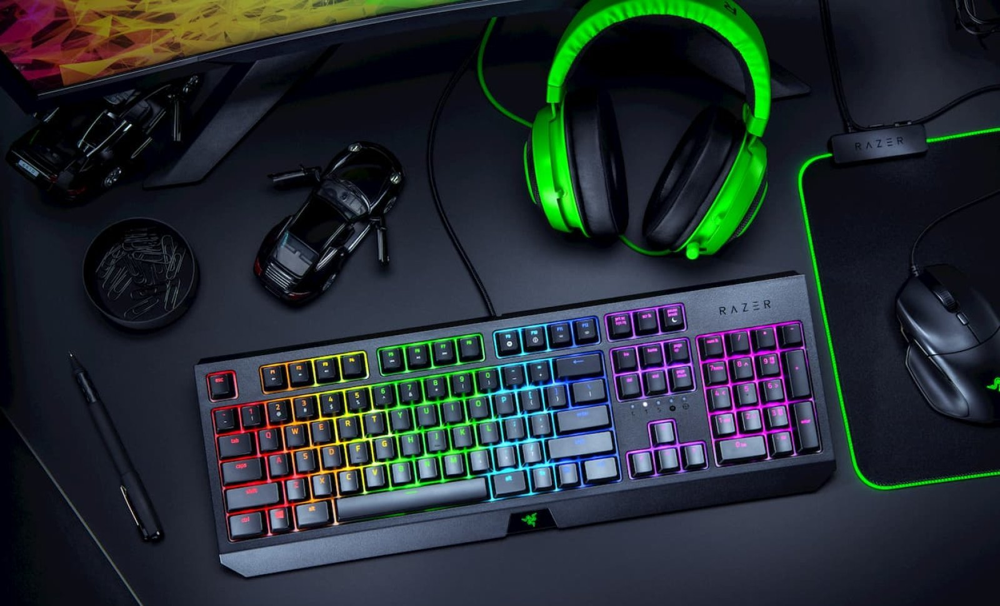

Daarna had ik een KTM sx 144. Helaas ben ik eind 2018 gestopt met motocross.
|  | Mijn grootste en favoriete hobby is gamen. Ik game al ongeveer 13 jaar. Ik ben begonnen rond 2006 met een Playstation 2. Vanaf 2010 tot 2016 had ik twee xbox's. Eind 2016 heb ik een computer samengesteld en vanaf toen gebruik ik alleen een pc. Daardoor ben ik ook heel erg enthousiast geworden over ict en programeren. |
 |
In 2017 ben ik ook begonnen met boxen, ik heb er een jaar aan gedaan wat ik erg leuk vond. Ik heb aan klasiek boxen gedaan en ook aan kickboxen. Maar omdat er toen examens kwamen stopte ik er mee om meer op de examens te focusen. |
Naar boven